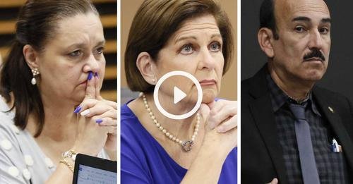

‘Aquí nadie se vistió de payaso’: Fuerte choque en primer día de investigación sobre finanzas electorales

Los diputados Vanessa Castro y Francisco Nicolás, de los partidos Unidad Social Cristiana (PUSC) y Liberación Nacional (PLN), fustigaron a la legisladora oficialista, Pilar Cisneros, por sugerir que la comisión investigadora de las finanzas electorales podría convertirse en un “circo” o “show político”. El encontronazo entre los congresistas sucedió este lunes, durante la primera sesión de la comisión especial investigadora del financiamiento de los partidos políticos en la reciente campaña electoral.